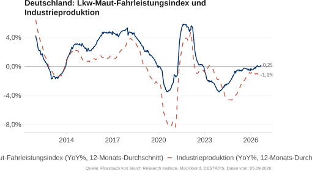
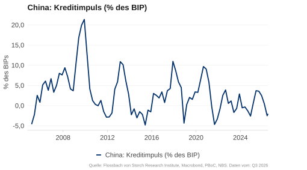
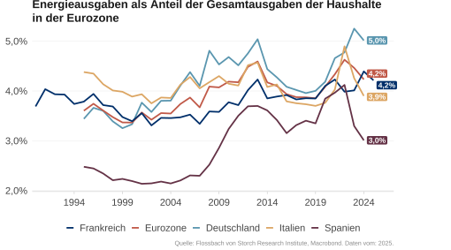
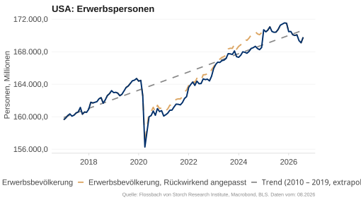
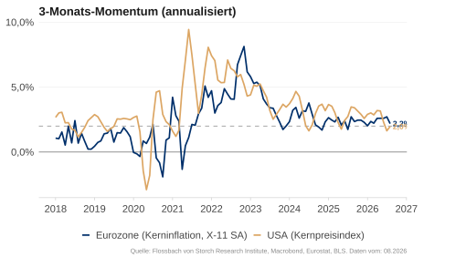
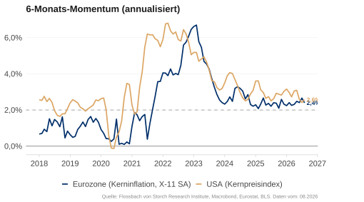
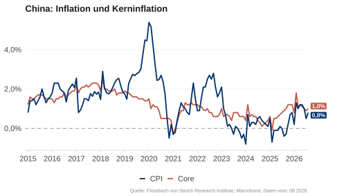

Konjunkturbericht

Makroausblick in Kürze
Global: Vom Öl- zum Zins-Schock
Die Teuerung der Energie hat die Inflation getrieben und das Wachstum belastet.
Bei Zinserhöhungen dürften verschärfte Finanzierungsbedingungen zur Wachstumsbremse werden.
USA: Robust, aber vorsichtiger Konsum
Der Arbeitsmarkt ist überraschend stark und der Konsum bleibt solide. Bleibt die Inflation hartnäckig, könnten Zinsanstiege den Konsum schwächen und das Wachstum dämpfen.
Euroraum: Strukturprobleme treffen Zinsbremse
Eingepreiste Leitzinsanhebungen treffen auf eine bereits geschwächte Wirtschaft. Restriktive Kreditstandards und hohe Energiekosten verstärken bestehende strukturelle Schwächen.
China: Politik stützt eine schwache Binnenwirtschaft
Expansive Geld- und Fiskalpolitik stabilisieren, während Immobilienmarkt und Binnenkonjunktur schwach bleiben. Die Exportdynamik hält an, doch geopolitische Risiken machen das Wachstum anfällig.
Wachstumsbremse: Zinsen?

REALWIRTSCHAFT
Wachstum

USA und Eurozone: Ölpreisschock

Im Mai blieb die Geschäftslage in den USA positiv, während sie sich im Euroraum weiter eintrübte. Der Einkaufsmanagerindex (PMI) misst die aktuelle Geschäftslage und die kurzfristigen Erwartungen der Unternehmen. Er liegt über 50, wenn mehr Unternehmen eine Verbesserung als eine Verschlechterung melden. In der Eurozone ging der PMI auf 48,5 zurück, weil insbesondere der PMI des Dienstleistungssektor stark zurückging. In den USA ging er leicht auf 51,5 zurück. In China lag der offizielle NBS-PMI bei 50,5, während der private RatingDog-PMI auf 54 stieg und volatil blieb.
Eurozone: Dienstleistungssektor schwach


Der Dienstleistungssektor in der Eurozone schwächelt weiter, während die Geschäftslage in der Industrie leicht nachgab, aber im expansiven Bereich blieb. Der Dienstleistungs-PMI fiel im Mai auf 47,7, belastet durch stark steigende Energiepreise und Störungen im Reiseverkehr. Der PMI des verarbeitenden Gewerbes sank leicht auf 51,6. In den USA blieb der Dienstleistungssektor mit einem PMI von 50,7 stabil, während die Industrie mit 55,1 weiter expandierte.
Deutschland und Frankreich mit trüben Aussichten


In Deutschland und Frankreich hat sich die Geschäftslage weiter eingetrübt. Der Dienstleistungs-PMI lag im Mai in Deutschland bei 48,8 und in Frankreich bei 44,3. Die PMIs des verarbeitenden Gewerbes gaben ebenfalls nach. Ob sie im kommenden Monat wieder zulegen, dürfte weiterhin von der Entwicklung der Energiepreise abhängen.
Die Deutsche Industrieproduktion schrumpft weiter

Der LKW-Maut-Fahrleistungsindex, der die Fahrleistung mautpflichtiger Lastwagen auf Autobahnen misst und als Frühindikator der Industrieproduktion gilt, hat sich nach der langen Schwächephase seit 2024 zwar spürbar erholt, weist im Jahresdurchschnitt jedoch kein Wachstum auf. Die Industrieproduktion folgt dieser Entwicklung und geht weniger stark zurück als noch 2025. Die leichte Erholung dürfte jedoch bereits beendet sein. Ein Wachstum der Industrieproduktion ist derzeit nicht in Sicht.
China: schwache Binnenwirtschaft

Die Einkaufsmanagerindizes für Mai 2026 zeichnen ein gemischtes Bild. Der offizielle NBS-PMI, der vor allem größere und binnenorientierte Unternehmen erfasst, lag bei 50,0 in der Industrie und 50,3 im Dienstleistungssektor. Der private, stärker exportorientierte RatingDog-PMI lag dagegen mit 51,8 (Industrie) und 54,4 (Dienstleistungen) weiterhin höher und volatiler. Die Divergenz spiegelt weiterhin die Schwäche des Binnenmarkts im Vergleich zur Exportwirtschaft wider.
Die Bauaktivitäten erholen sich nicht

Die Zahl der begonnenen Neubauten fiel im März weiter und liegt seit 2022 unter dem Niveau von 2010. Dies spiegelt sich auch in der Zahl der unfertigen und fertiggestellten Immobilien wider, die ebenfalls stark zurückgingen.
Finanzierungsbedingungen

US-Banken: restriktive Kreditvergabe für Unternehmen


Die SLOOS-Umfrage vom April 2026 zeigt, dass mehr Banken ihre Kreditstandards für Unternehmen verschärft als gelockert haben (leicht positiver Wert). Die Mehrheit der befragten Banken hat über eine stärkere Kreditnachfrage in den letzten drei Monaten berichtet (positiver Wert).
Restriktive Kreditbedingungen in der Eurozone


Laut dem Bank Lending Survey (BLS) der EZB für das zweite Quartal 2026 dürften die Kreditbedingungen in den kommenden drei Monaten sowohl für Unternehmen als auch für Haushalte restriktiver werden (positiver Wert). Die Nettokreditnachfrage soll laut den Befragten sowohl für Wohnimmobilien als auch für Konsumzwecke zurückgehen.
Schwacher Kreditimpuls


Der Kreditimpuls (die Veränderung des Kreditflusses zum privaten Sektor in Prozentpunkten des BIP) ist ein guter Frühindikator für die private Nachfrage. Zuletzt war er sowohl in den USA als auch im Euroraum zwar leicht positiv, verlor jedoch an Dynamik. Da insbesondere in der Eurozone die Zahl der Banken mit steigender Kreditvergabe und -nachfrage deutlich sinkt, deutet dies auf einen baldigen negativen Kreditimpuls hin.
Nachlassender Kreditimpuls in China

Der Kreditimpuls war in China Anfang des Jahres leicht positiv und ist im ersten Quartal 2026 ins negative zurückgefallen. Dies deutet weiterhin auf eine schwache private Nachfrage hin.
Privater Konsum

USA: Die Einzelhandelsverkäufe steigen weiter

Die offiziellen Einzelhandelsumsätze sind im April im Jahresvergleich um 5,2 % gestiegen, etwas mehr als in den Vormonaten. Der wöchentliche „Johnson Redbook Retail Sales“-Index, der die Verkäufe von Warenhäusern und Einzelhandelsgeschäften erfasst, stieg stark an und zeigt bis Mitte Mai starke US-Einzelhandelsumsätze.
USA: Kreditkartenschulden steigen etwas schneller

Die Kreditkartenschulden wuchsen in den letzten Wochen so schnell wie in den letzten Jahren. Die monatliche Veränderung lag zuletzt im üblichen Saisonmuster früherer Jahre.
USA: Google-Suchen deuten auf einen vorsichtigen Konsum hin


Oft beginnt Konsum mit einer Internetsuche. Daher eignen sich Online-Suchdaten gut als Vorlaufindikator für den privaten Konsum. Die Suchintensität nach dem Begriff „Restaurant“ lag in den vergangenen Wochen etwas unter dem Durchschnitt der letzten fünf Jahre, nachdem sie zuvor höher gewesen war. Begriffe aus der Kategorie „Reise“ werden seit zwei Wochen weniger gesucht als im Durchschnitt der letzten fünf Jahre.
USA: Die US-Sparquote sinkt weiter

Die Sparquote der US-Haushalte lag im Durchschnitt bei 5,2 % seit 2000. In Krisen tendiert diese dazu, zu steigen. Im April ging die Sparquote auf 2,6 % zurück und blieb unter dem historischen Durchschnitt. Die Ungewissheit über die Dauer des Krieges im Iran und die Auswirkungen auf Energiepreise könnten Haushalte dazu motivieren, wieder mehr zu sparen.
Nur die Stimmung der Republikaner bleibt optimistisch


Die Konsumentenstimmung der Amerikaner bleibt im Durchschnitt pessimistisch. Der Consumer Confidence Index des Conference Board liegt auf dem Niveau der Coronakrise. Der Consumer Sentiment Index der Universität Michigan erreichte Werte, wie sie sonst nur in Rezessionen vorkommen. Wie üblich, sind Anhänger der Oppositionspartei pessimistischer. Die Republikaner bleiben dagegen optimistisch.
Energieausgaben: USA niedriger als Eurozone

Historisch lag die Energiebelastung der Haushalte in den USA höher als in Europa. Mit der Coronakrise und dem Ukrainekrieg hat sich dieses Verhältnis jedoch umgekehrt. Bis Ende 2024 war der Anteil der Energieausgaben an den gesamten Haushaltsausgaben in Deutschland und Frankreich höher als in den USA. Der aktuelle Ölpreisschock dürfte diese Tendenz weiter verstärken.
Eurozone: Energiebelastung deutsche Haushalte

Die Energiebelastung deutscher Haushalte liegt seit Mitte der 2000er-Jahre über dem Durchschnitt der Eurozone. Mit dem Ausbruch des Krieges in der Ukraine stieg sie stark an, während sie insbesondere in Spanien und Italien wieder zurückging. In Deutschland verharrte der Anteil der Energieausgaben an den gesamten Haushaltsausgaben hingegen bei rund 5 Prozent.
Eurozone & Deutschland: Sparquote der Haushalte bleibt stabil

Die Sparquote bleibt in Deutschland stabil bei 10 %, deutlich höher als in den USA (2,6 %). Historisch lag die deutsche Sparquote ebenfalls höher als in der Eurozone. Während der Coronakrise stieg sie auf fast 20 %.
Google-Suchdaten deuten auf Zurückhaltung in Frankreich und Deutschland hin


Die Google-Suchen nach “Restaurant” in Deutschland und Frankreich deuten auf eine schwache private Nachfrage hin. In beiden Ländern lag die Suchintensität in den letzten Wochen niedriger als im Durchschnitt der letzten fünf Jahre zur selben Jahreszeit.
Weniger Vorsicht in Spanien


Während in Spanien die Suchintensität nach “Restaurant” so hoch wie im Durchschnitt der letzten Jahre blieb, war sie in Italien etwas niedriger.
Die Stimmung verbessert sich nur leicht

In China hat sich das Konsumklima seit Anfang 2025 leicht verbessert, bleibt jedoch historisch niedrig. Auch die Stimmung im Immobiliensektor ist gedrückt. Der „National Real Estate Climate Index“ sinkt im Trend seit drei Jahren.
Arbeitsmarkt

USA: Weiter starker Anstieg der Nominallöhne

Im Mai stiegen die durchschnittlichen Stundenlöhne in den USA um 3,4 % im Jahresvergleich, erneut etwas langsamer als im Vormonat. Im ersten Quartal 2026 betrug das Lohnwachstum 3,9 % in Deutschland und nur 1,6 % in Frankreich. In Deutschland und in den USA bleibt das Lohnwachstum über dem Durchschnitt von 2011-2019.
USA: Normalisierung des Lohnwachstums?

Das Lohnwachstum nach dem Wage Tracker von Indeed Hiring Lab scheint dem Lohnmedianwachstum der USA etwa sieben Monate vorauszulaufen. Wenn dies stimmt, könnte sich das Lohnwachstum weiter normalisieren.
USA: schwaches Lohnwachstum bei niedrigen Löhnen

Im April stiegen die Stundenlöhne in den USA im Durchschnitt um 3,8 %. Die Lohnzuwächse der einzelnen Lohngruppen nähern sich an. Im niedrigsten Lohnquartil legten die Löhne um 3,6 % zu, im höchsten Quartil um 3,7 %. Damit wachsen die höchsten Löhne nicht mehr so viel stärker wie auf dem Höhepunkt 2022 und steigen nur knapp etwas schneller als die niedrigsten.
Der US-Arbeitsmarkt ist weniger angespannt

Die Beveridge-Kurve stellt die Beziehung zwischen der Vakanzquote – die offenen Stellen als Anteil an der Summe aus besetzten und offenen Stellen – und der Arbeitslosenquote dar. Mit der Coronakrise ging die Kurve nach außen, weil aufgrund der Politikmaßnahmen trotz vieler freier Stellen die Arbeitslosigkeit hoch blieb. Die Rigiditäten haben sich wieder abgebaut und die Beveridge-Kurve ist auf das Niveau vor der Coronakrise zurückgekehrt. Die Lage am US-Arbeitsmarkt hat sich also normalisiert.
Stellenwachstum erholt sich, bleibt dennoch schwach

Im Mai stieg die Zahl der Stellen im privaten Sektor ohne Landwirtschaft laut ADP-Bericht gegenüber dem Vorjahr um 0,5 %, etwas höher als im Vormonat. Die offiziellen Zahlen wiesen ebenfalls ein jährliches Wachstum von 0,5 % aus. Der US-Arbeitsmarkt bleibt stabil, doch das Stellenwachstum verläuft inzwischen langsamer als in den Jahren zwischen Finanz- und Coronakrise.
USA: Entlassungen und Jobless Claims im Rahmen


Im Mai wurden rund 97.000 Stellenstreichungen angekündigt und damit etwas mehr als im Vormonat. Gleichzeitig stiegen die wöchentlichen Erstanträge auf Arbeitslosenhilfe zuletzt leicht auf 225.000, blieben jedoch am unteren Rand der Schwankungen der vergangenen drei Jahre sowie auf historisch niedrigem Niveau. Zwischen 1990 und 2019 betrug der Wochendurchschnitt hingegen rund 350.000.
USA: sinkendes Arbeitsangebot

Das Arbeitsangebot in den USA stagniert seit Herbst 2024. Eine methodische Anpassung erhöhte die Erwerbsbevölkerung im Januar 2025 um 2,1 Mio. Menschen. Eine neue rückgerechnete Reihe (gelb) verdeutlicht, dass das Wachstum schon im Herbst 2024 abbrach. Mit der restriktiveren Migrationspolitik von Donald Trump dürfte das Arbeitsangebot weiterhin stagnieren oder sogar sinken.
Die Nominallöhne steigen in Deutschland schneller
Der Wage Tracker von Indeed Hiring Lab zeigt weiter steigende Nominallöhne. Im April lag die Veränderungsrate in der Eurozone bei 2,3 %, bei 3,2 % in Deutschland, 1,1 % in Frankreich und 2,3 % in den USA. Nur in Deutschland steigen die Löhne schneller als im Vorjahr.
Eurozone: angespannter Arbeitsmarkt

Die Beveridge-Kurve, die die Beziehung zwischen Vakanzquote und Arbeitslosenquote darstellt, weist auf einen angespannten Arbeitsmarkt hin. Während der Coronakrise verschob sich die Kurve nach außen, da politische Maßnahmen dazu führten, dass die Arbeitslosigkeit trotz vieler offener Stellen hoch blieb. Inzwischen haben sich diese Rigiditäten weitgehend abgebaut und die Arbeitslosigkeit liegt auf historisch niedrigem Niveau. Die Vakanzquote ist zwar zurückgegangen, entspricht jedoch wieder dem üblichen Verhältnis zwischen beiden Variablen.
China: Sehr hohe Jugendarbeitslosigkeit

Die Arbeitslosenquote Chinas bewegte sich in den letzten Monaten bei 5 % seitwärts. Die Jugendarbeitslosigkeit, definiert als die Arbeitslosenquote unter den 16- bis 24-Jährigen, erreichte Mitte 2023 21,3 %. Nach einer Veröffentlichungspause von sechs Monaten gibt es eine neue Statistik „ohne Studenten“. Diese lag im Februar bei 16,9 %.
PREISE
Rohstoffe

Hohe Seefrachtkosten für Rohöl

Die Frachtraten für Rohöltanker sind infolge der Blockade der Straße von Hormus auf neue Rekordstände gestiegen. Trotz eines jüngsten Rückgangs liegen sie weiterhin über dem Höchstniveau von 2022 nach Beginn des Ukrainekriegs. Der World Container Index (WCI), der die Frachtraten im Warenhandel abbildet, verharrt hingegen aufgrund anhaltender Überkapazitäten im Containerschiffbau auf niedrigem Niveau.
Backwardation: sinkende Ölpreise erwartet


Der Markt rechnet mit sinkenden Ölpreisen. Lieferungen in drei Monaten oder einem Jahr sind günstiger als im aktuellen Monat (Frontmonat). Diese „Backwardation“ signalisiert, dass die aktuelle Knappheit als vorübergehend betrachtet wird. Die Preise der Futures mit Lieferung in einem Jahr sind in den letzten Tagen erneut stark gestiegen, stärker als nach dem Anfang des Krieges in der Ukraine 2022.
Wann normalisiert sich der Schiffsverkehr durch die Straße von Hormus?

Eine Wiedereröffnung der Straße von Hormus ist entscheidend für das Ölangebot und damit für die Ölpreise. Ende Mai preisten die Prognosemärkte noch mit 65% Wahrscheinlichkeit eine Öffnung bis Ende Juni ein. Am 8. Juni lag sie jedoch nur bei 10 %. Für Ende Juli liegt die implizite Wahrscheinlichkeit bei 28 %, für Ende Dezember bei 74 %.
Europäische Gaspreise verlaufen ähnlich wie 2022

Europa bleibt stark von Importen von Öl und Gas abhängig. Nach einem schnellen Anstieg um rund 75 % sind die niederländischen TTF‑Erdgas‑Futures mit einmonatiger Laufzeit zuletzt etwas zurückgegangen, liegen aber immer noch etwa 50 % über dem Niveau von einer Woche vor Beginn des Iran-Kriegs. In der Energiekrise 2022 hatten sich die europäischen Gaspreise zeitweise verdreifacht.
USA

USA: Inflationsrate steigt stark an


Im Mai stiegen in den USA die Konsumentenpreise weiter an. Der Verbraucherpreisindex (CPI) erhöhte sich wie erwartet um 4,2 % im Vergleich zum Vorjahr. Die Kerninflation lag bei 2,9 %, gleich den Medianerwartungen der Teilnehmer einer monatlichen Bloomberg-Umfrage. Der starke Anstieg geht insbesondere auf den Ölpreisschock zurück.
Inflation in den USA: CPI, PCE & BIP-Deflator

Die Inflation wird über verschiedene Indizes ermittelt. Der CPI erfasst Konsumentenpreise, der PCE-Index die Ausgaben der Haushalte und der BIP-Deflator die Preise aller im Inland produzierten Wirtschaftsgüter. Die Veränderungsraten aller drei Indizes erreichten Mitte 2022 einen Höhepunkt. Im April 2026 lag die Inflationsrate des von der Fed favorisierten Kern-PCE-Index (ohne Energie und Lebensmittel) bei 3,3 %.
Inflationstreiber: Dienstleistungen und Energie

Die Teuerung bei Dienstleistungen ist weiterhin der dominante Treiber der US-Inflation. Während der Beitrag der Lebensmittelpreise moderat positiv bleibt, schlägt der jüngste Ölpreisschock nun voll durch: Der Inflationsbeitrag der Energiepreise ist so hoch wie seit 2022 nicht mehr und treibt die Gesamtrate wieder spürbar nach oben.
USA: Steigender Inflationsdruck

Im Mai stiegen die Dienstleistungspreise gegenüber dem Vorjahr um 3,5 %. Die Lebensmittelpreise zogen mit einer jährlichen Veränderungsrate von 2,7 % weiterhin stark an. Besonders stark legten die Energiepreise zu: Mit einem Anstieg von 23 % gegenüber dem Vorjahr fielen sie so hoch aus wie zuletzt im Jahr 2022.
USA: Supercore-Inflation steigt wieder an

Supercore wird als der Dienstleistungspreisindex ohne Energie- und Wohnkosten definiert. Auf der Grundlage des CPI-Index lag die Jahresrate der Supercore-Inflation im Mai bei rund 3,7 %. Gemessen am PCE-Index stieg die Supercore-Inflation im April auf knapp 3,6 %. Dies zeigt, dass der Inflationsdruck im Dienstleistungssektor auch ohne Wohnkosten weiterhin hoch bleibt.
Mietpreiswachstum fällt nicht mehr

Mietkosten machen einen großen Teil der Dienstleistungspreise im CPI aus und sind zudem stark mit den Kosten für eigengenutztes Wohnen korreliert. Während der Corona-Jahre war der Zillow-Mietindex für Neuvermietungen ein guter Frühindikator für die Mietentwicklung, da Bestandsmieten träger reagieren. Aktuell signalisiert der Zillow-Mietindex mit rund 1,7 % ein langsameres Mietwachstum als der wieder anziehende CPI-Mietindex mit etwa 2,9 %.
USA: Inflation könnte weiter steigen

Der Preisindex im ISM-Dienstleistungs-PMI läuft der Verbraucherpreisinflation etwa sechs Monate voraus. Wenn sich dieser Zusammenhang bestätigt, dürfte die Inflation in den kommenden Monaten weiter steigen.
Eurozone

Steigende Inflation in der Eurozone


Im Mai stieg der HVPI der Eurozone im Jahresvergleich um 3,2 %, die Kerninflation (ohne Energie und Lebensmittel) lag bei 2,5 %. In Deutschland (2,7 %), Frankreich (2,8 %), Italien (3,3 %) und Spanien (3,6 %) lag die Inflation im Mai erneut klar über der Zielmarke von 2 %.
Verteuerung von Dienstleistungen und Energie

Bis Ende 2022 trugen vor allem Energie- und Lebensmittelpreise zur Inflation bei. Derzeit wird die Teuerung überwiegend von steigenden Dienstleistungspreisen getrieben, in geringerem Maß auch von Lebensmitteln und erneut von Energie. Zwischenzeitlich wirkten die Energiepreise jedoch über mehrere Monate dämpfend auf die Inflation.
Der Inflationsdruck bleibt


Die 3- und 6-Monats-annualisierten Kerninflationsraten zeigen den kurzfristigen Inflationsdruck. Im Mai lagen in der Eurozone sowohl die 3- als auch die 6-Monats-Rate bei 2,4 %. In den USA betrug die 3-Monats-Rate 3,2 % und die 6-Monats-Rate 2,9 %.
Inflationserwartungen

Volatile Inflationserwartungen der Konsumenten


Im Mai 2026 lagen die Inflationserwartungen der US-Konsumenten für die nächsten zwölf Monate bei 4,8 % (Universität Michigan) und 3,6 % (New York Fed). In der Eurozone erwarteten die Haushalte im Februar laut EZB im Median 4 % für das kommende Jahr und 2,9% für die nächsten drei Jahre.
Energie wird wieder teurer …


Lebensmittel- und Energiepreise werden ausgeblendet, um die grundlegende Inflationsentwicklung zu analysieren. Für die Wahrnehmung der Kaufkraft und das Wahlverhalten sind jedoch gerade diese Preise entscheidend. Nach dem starken Anstieg 2021 haben sich die Energiepreise zwar stabilisiert, die Lebensmittelpreise steigen jedoch weiter. Der Krieg im Iran hat die Energiekosten nun erneut nach oben getrieben: In den USA liegen sie 24 % über dem Niveau von Trumps Wahl (Nov. 2024), im Euroraum sind es 9 %.
… was den US-Republikanern schaden dürfte

Im November 2026 werden das gesamte Repräsentantenhaus und 35 der 100 Sitze im Senat neu gewählt. In den Prognosemärkten ist eine republikanische Mehrheit im Repräsentantenhaus derzeit nur mit 19 % eingepreist. Für den Senat ist die Wahrscheinlichkeit zuletzt wieder gestiegen und liegt aktuell bei rund 56 %.
China: Deflationssorgen

Die chinesische Inflationsrate lag seit Mitte 2023 unter 1 %. Im April betrug sie 1,2 %, die Kerninflation (ohne Lebensmittel und Energie) lag bei 1,1 %. Dies unterstreicht die schwache wirtschaftliche Dynamik des Landes. Hohe Öl- und Energiepreise dürften die Inflationsrate zumindest vorübergehend weiter erhöhen.
ZINSERWARTUNGEN
& FISKALIMPULS
USA: Sinkender Realzins

Der Realzins ist die Differenz von Nominalzins und (erwarteter) Inflation. Während man den Nominalzins am Markt ablesen kann, muss man sich für die erwartete Inflation einer Schätzung bedienen. Je nach gewähltem Ansatz liegt der Realzins für die US-Wirtschaft derzeit zwischen -1,0 % und 0,3 %. Alternativ kann man die Rendite inflationsindizierter Staatsanleihen (TIPS in den USA) am Markt ablesen. Für eine Laufzeit von zwei Jahren ist der Realzins seit April 2022 positiv und stieg zuletzt auf rund 1,1 %.
Volatile Zinserwartungen


Die Futures-Märkte preisen für die Fed bis Dezember 2026 eine Zinsanhebung von höchstens 25 Basispunkten ein. Im Euroraum werden Zinserhöhungen um rund 50 Basispunkte eingepreist. Das erwartete Zinsniveau liegt in Europa dennoch deutlich unter dem der USA.
China: Expansive Geldpolitik

Die chinesische Zentralbank steuert ihre Geldpolitik vor allem über drei Instrumente: den 7-Tage-Reverse-Repo-Satz, die einjährige Loan Prime Rate (LPR) der Geschäftsbanken und den Mindestreservesatz (RRR). In den vergangenen Jahren hat sie alle drei Sätze mehrfach gesenkt, um mehr Liquidität bereitzustellen und damit über Kreditexpansion die Konjunktur zu stützen. Für 2026 signalisiert sie eine weiterhin moderat lockere Geldpolitik.
Moderate Fiskalimpulse für 2026

Die jüngsten Schätzungen des IWF haben insbesondere das Bild für China im Jahr 2026 verändert. Statt eines zuvor erwarteten neutralen Fiskalimpulses wird nun ein starker positiver Impuls prognostiziert, getragen von umfangreichen staatlichen Maßnahmen zur Stützung der Binnennachfrage. In den USA blieb der Fiskalimpuls 2024 und 2025 negativ, für 2026 wird jedoch eine leichte Lockerung erwartet. In der Eurozone verschiebt sich der Fiskalimpuls von 2025 auf 2026, da insbesondere das deutsche Rüstungs- und Infrastrukturprogramm erst mit Verzögerung wirksam wird.
Konjunkturprognose 2026
| Mom. | Fiskal. | Finanz. | FvS-RI | Bloomberg-Konsensus | |
|---|---|---|---|---|---|
| USA | 0 | + | 0 | 2,0 % | 2,1 % |
| CN | 0 | + | 0 | 4,6 % | 4,6 % |
| EA | - | + | 0 | 0,6 % | 0,8 % |
| DE | - | + | 0 | 0,4 % | 0,6 % |
Unsere Wachstumsprognose für 2026 basiert auf einer qualitativen Einschätzung des wirtschaftlichen Momentums, des Wachstumseffekts der Fiskalpolitik sowie der Finanzierungsbedingungen, einschließlich der Geldpolitik. Diese Prognosen sind als Orientierungsgrößen und nicht als präzise Punktvorhersagen zu verstehen.
USA: Stabiler Konsum, eine solide Arbeitsmarktlage sowie weniger stark steigende Löhne begründen das unverändert positive Momentum. Fiskalpolitisch ist keine Haushaltskonsolidierung vorgesehen. Vielmehr bleibt der Kurs expansiv.
Geldpolitisch werden keine Zinssenkungen mehr bis Ende des Jahres erwartet. Der Krieg im Iran erhöht die Unsicherheit und das Rezessionsrisiko.
China: Der weiterhin schwächelnde Immobiliensektor belastet die Inlandsnachfrage. Die Industrie stabilisiert die Konjunktur über Exporte, allerdings insbesondere via Subventionen, was auf Überkapazitäten hinweist und deflationär wirkt. Von der Fiskal- und Geldpolitik sind leichte Impulse zu erwarten.
Eurozone / Deutschland: Das negative Momentum in Deutschland und der Eurozone infolge der Auswirkungen des Ölpreisschocks auf Nachfrage und Industrie wird auf europäischer Ebene teilweise durch das dynamischere Wachstum in Spanien und Italien kompensiert. Spanien schwächelt jedoch zunehmend. Schuldenfinanzierte Konjunkturprogramme dürften 2026 einen Impuls geben. Ohne Deregulierung dürften deutsche Infrastruktur- und Rüstungsinvestitionen allerdings nur schwach wirken. Steigende Öl- und Gaspreise sowie ein schwacher Euro belasten die Konjunktur zusätzlich. Angesichts der schlechten Geschäftsaussichten und der erhöhten Unsicherheit haben wir unsere Prognose erneut gesenkt.
Rechtliche Hinweise
Die in diesem Dokument enthaltenen Informationen und zum Ausdruck gebrachten Meinungen geben die Einschätzungen des Verfassers zum Zeitpunkt der Veröffentlichung wieder und können sich jederzeit ohne vorherige Ankündigung ändern. Angaben zu in die Zukunft gerichteten Aussagen spiegeln die Ansicht und die Zukunftserwartung des Verfassers wider. Die Meinungen und Erwartungen können von Einschätzungen abweichen, die in anderen Dokumenten der Flossbach von Storch SE dargestellt werden. Die Beiträge werden nur zu Informationszwecken und ohne vertragliche oder sonstige Verpflichtung zur Verfügung gestellt. Die enthaltenen Informationen und Einschätzungen stellen keine Anlageberatung oder sonstige Empfehlung dar. Eine Haftung für die Vollständigkeit, Aktualität und Richtigkeit der gemachten Angaben und Einschätzungen ist ausgeschlossen. Die historische Entwicklung ist kein verlässlicher Indikator für die zukünftige Entwicklung.
Sämtliche Urheberrechte und sonstige Rechte, Titel und Ansprüche an, für und aus allen Informationen dieser Veröffentlichung unterliegen uneingeschränkt den jeweils gültigen Bestimmungen und den Besitzrechten der jeweiligen eingetragenen Eigentümer. Sie erlangen keine Rechte an dem Inhalt. Das Copyright für veröffentlichte, von der Flossbach von Storch SE selbst erstellte Inhalte bleibt allein bei der Flossbach von Storch SE. Eine Vervielfältigung oder Verwendung solcher Inhalte, ganz oder in Teilen, ist ohne schriftliche Zustimmung der Flossbach von Storch SE nicht gestattet. Nachdrucke dieser Veröffentlichung sowie öffentliches Zugänglichmachen bedürfen der vorherigen schriftlichen Zustimmung durch die Flossbach von Storch SE. © 2026 Flossbach von Storch. Alle Rechte vorbehalten.